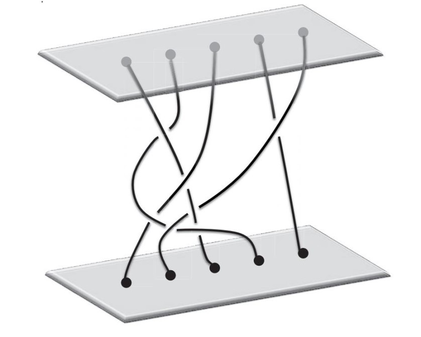
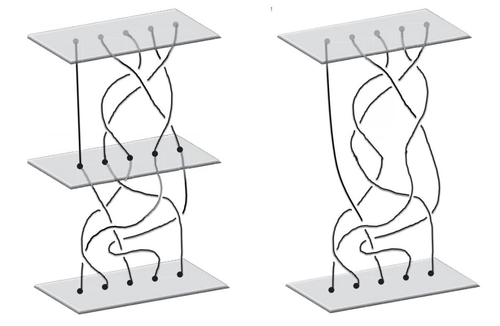
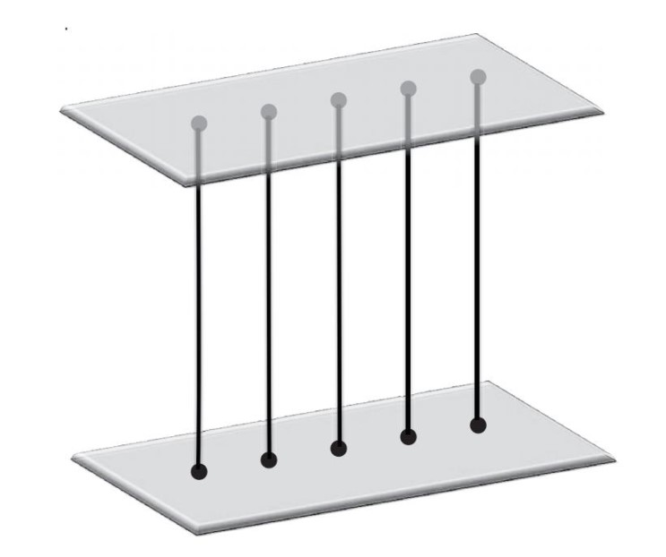
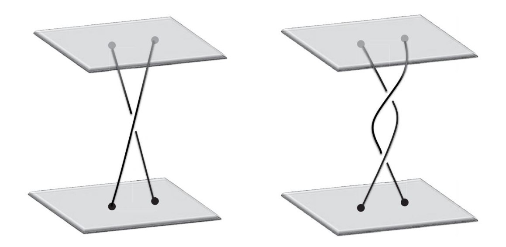
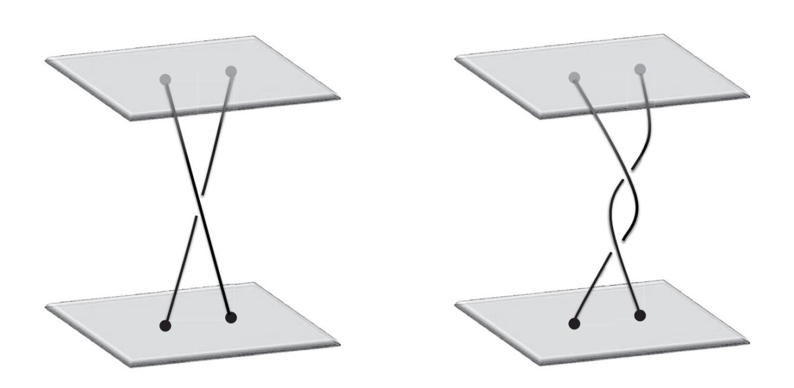
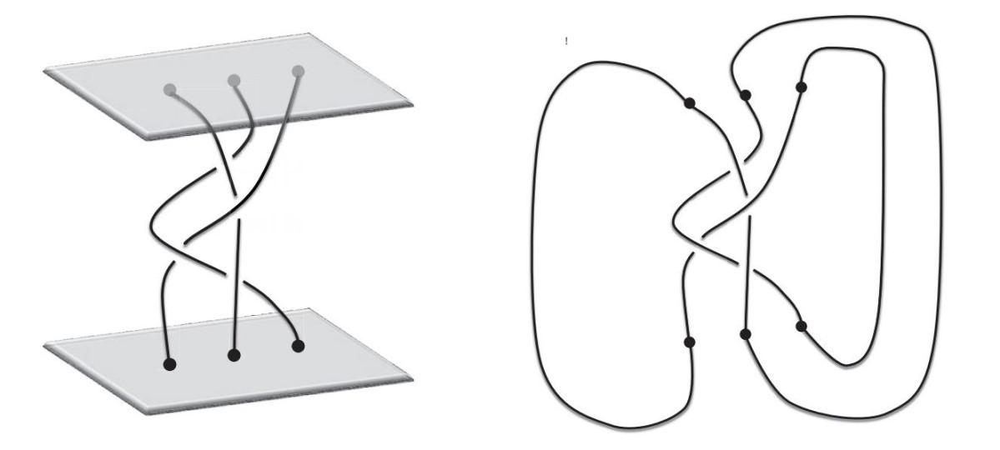

就在我开始感到绝望时，情况有了转机。有一天课间休息时，我在石油天然气学院的走廊里碰到了亚历山大·尼古拉耶维奇·瓦尔琴科（Alexander Nikolaevich Varchenko）。瓦尔琴科是我们学院的一位受人尊敬的数学老师，也是世界闻名的数学家，他的老师弗拉基米尔·阿诺德（Vladimir Arnold）是苏联数学界的泰斗。
“你有没有兴趣研究一个数学问题呢？”他问我。
“当然愿意。”我说，“是哪一类题目啊？”我回答的语气很平淡，就好像并不是什么问题我都愿意接手。
“这是我在研究中遇到的一个问题。我觉得这个题目不错，可以交给像你这样聪明的学生。研究这方面问题的专家是德米特里·鲍里索维奇·富克斯（Dmitry Borisovich Fuchs）。”这个人我听说过，也是一位著名的数学家。“我已经跟他说过了，他同意指导学生研究这个课题。这是他的电话号码，你给他打个电话，他会告诉你要做什么。”
像瓦尔琴科这样经验丰富的数学家，在研究中经常会遇到各种尚未解决的数学问题。如果此类问题与自己的研究方向非常接近，他可能会亲自解决这个问题。但是，数学家们不会在遇到每一个问题时都亲自解决，而是把这些问题（通常是他们认为比较简单的问题）分派给学生完成。有时候，这个问题也可能跟这位老师的研究领域没有直接联系，但他（她）却比较感兴趣。瓦尔琴科交给我的问题就属于此类情况，他介绍该领域的专家富克斯来指导我，也是出于这个考虑。总体说来，这是数学界的社会化合作中经常发生的一种“交易”。
但是，这一次的安排还是有点儿异乎寻常，因为富克斯并不是任何大学的正式老师。多年以来，他一直与其他一些具有顶尖水平的数学研究人员一起，私下里教授有数学天赋却被莫斯科大学拒之门外的学生，试图帮助他们摆脱歧视的困扰。
他们组织了多种活动，其中包括被称为“犹太人民大学”的夜校。富克斯等人积极地投身于夜校的教学活动中，为学生们授课答疑，有的课甚至被安排在石油天然气学院的礼堂里进行。当然，这都是我入学之前的事情了。
夜校是由贝拉·莫奇尼克·萨博托夫斯卡娅（Bella Muchnik Subbotovskaya）这位英勇的女性组织起来的，她是夜校的灵魂人物。不幸的是，她遭遇了一场被怀疑为谋杀的车祸，被一辆卡车撞死了。在失去了她的领导之后，夜校很快就分崩离析了。事实上，在我到石油天然气学院上学之前，犹太人民大学就已经不存在了。
尽管夜校已经不存在了，但还是有一小部分数学老师，在私底下从事教学活动，一对一地帮助像我这样遭遇歧视的人。他们找到那些有发展前景的学生，鼓励并指点他们学习，有时候甚至会提供全面辅导。瓦尔琴科在遇到一个数学问题需要让学生研究时，他完全可以通过自己的关系，在莫斯科大学力学与数学系找一名学生去做，但他却把这个任务交给了在石油天然气学院上学的我，而且富克斯也愿意投入时间指导我，原因就在这里。
我很庆幸他选择了我。现在回想一下，如果没有富克斯慷慨无私、不求回报的帮助，我肯定不能走上数学研究的道路。虽然我在石油天然气学院学习应用数学，也去莫斯科大学旁听理论数学，但这些还远远不够。没有人指导，任何学生都无法独立完成研究工作，导师绝对不可或缺。
不过，当时我并不清楚这一切，我只知道我拿到的是著名数学家富克斯的电话号码，我将在他的指导下完成一个项目。这实在令人难以置信，我不知道最终结果会怎么样，但是我清楚，我的处境已经发生了重大转变。
当天晚上，我鼓足勇气，在电话亭里给富克斯打了一个电话。我先做了一下自我介绍。
“哦，我知道。”富克斯说，“我这里有一篇论文，希望你能看一看。”
第二天，我们见了面。富克斯的外貌完全出乎我的预料，他身材很高大，一副生意人的模样。
“给你。”他递给我一篇文章的单行本，“读一读。有任何地方看不懂，都可以给我打电话。”
我小心翼翼地接过论文，仿佛自己捧在手里的是圣杯。
这是富克斯几年前写的一篇关于“辫群”（braid group）的论文，一共有12页。当天晚上，我就开始阅读了。
在这之前，我一边自学，一边接受叶夫根尼·叶夫根尼耶维奇的指导，已经有三年时间了。看来，这三年时光没有白费，我不仅认识标题中的每一个词，而且标题的意思我也能理解。我决定独立看完整篇文章，这可是关系到自尊心的事啊。我已经开始想象，如果我能做到独立阅读并弄懂这篇文章，富克斯在知道后会露出一副什么样的表情。
此前，我听说过“辫群”的概念。在本书第2章，我们已经讨论过群的概念了，辫群就是一种典型的群。叶夫根尼·叶夫根尼耶维奇在介绍群的概念时结合了对称的概念，把群中的所有元素看作某个物体的旋转操作。例如，循环群包含圆桌（或者任何“圆形”物体）的对称操作，而包含4种旋转操作的群则跟方桌（或者任何“方形”物体）相关。建立了群的概念之后，我们就可以找出其他一些例子。事实上，有很多群都与对称无关，讨论对称群的首要目的是引入群的概念。这样的做法其实很常见。人们之所以会建立某个数学概念，其原因往往是数学（或者物理、生物学、工程技术等）领域出现的一些新问题和现象，但是随后，该概念很有可能被用于其他领域，甚至对这些非数学领域具有非常重要的意义。
研究表明，很多群并不是来源于对称，辫群就是其中之一。
不过，当时我并不知道在现实世界中，辫群的概念已经被应用于编码学、量子计算和生物学。（这些应用将在后文中进行讨论。）尽管如此，这些抽象的数学概念的美，仍然让我为之折腰。
对于任一自然数n=1，2，3，…总存在一个辫群，我们可以用这些自然数为每一个辫群命名。通常，我们把辫群命名为Bn。当n=1时，我们得到辫群B1；当n=2时，得到辫群B2，依此类推。
我们在描述圆桌和方桌的对称群时，需要先描述群里所包含的对称操作。同理，我们在描述辫群Bn时，也需要先描述群中的元素。辫群Bn的元素被称作由n条线生成的辫子。例如，下图表示当n=5时生成的辫子。我们想象有两块坚固透明的平板，每块板上各钉有5颗钉子，将一块平板上的一颗钉子与另一块平板上的一颗钉子用一条线连接。由于平板是透明的，因此我们能看到每条线的全貌。每条线可以通过任意方式与其他线编织在一起，但是不允许自身缠绕打结。每颗钉子只可以连接一条线，两块平板的位置一旦确定就再也不变了。
于是，两块平板和数量不确定的线构成了一个辫子，这就好像一辆汽车包含四个车轮、一个变速器、四扇车门等。考虑辫子时，我们不是把这些组成元素分拆开来，而是把它们作为一个整体加以考虑。

上图所示为由n条线生成的辫子。接下来，我们看看由n条线生成的辫子是如何形成辫群的。此时，我们需要描述两条这样的辫子是如何结合起来的。换言之，我们需要利用两条由n条线生成的辫子，生成另一条由n条线生成的辫子，这个过程与把两种旋转操作结合成第三种旋转操作非常相似。然后，我们还需要检验这一结合是否满足第2章里所列出的结合的特性。
现在，假设我们有两条辫子。为了用这两条辫子生成第三条辫子，我们按照下图（见下页）所示的方式，将一条辫子置于另一条辫子的上面，让钉子对齐，并将这两块平板相接位置的上方和下方处的对应钉子上的线连接起来。
最后得到的第三条辫子，高度将增加一倍，但高度并不是问题。我们可以缩短线的长度，使线的最终高度与之前一样，同时保持各线原先相互缠绕的方式不变。瞧！开始时是两条辫子，现在生成了一条新辫子。这就是辫群的双辫结合规则。
由于辫群并非产生于对称，因此最好不要把上述操作看成“结合”（而在讨论对称群时，这样考虑却没有任何问题），而是把它看作类似于数字运算中的“加法”或“乘法”。从这个角度来看，辫子比较像数字，当然，如果你愿意，也可以把它看成是“头发的数目”。

已知两个整数，我们把它们相加，将得到一个新的整数。同样，已知两条辫子，我们也可以利用上述规则，得出一条新辫子。因此，我们可以把这个操作看作两条辫子的“加法”。
现在，我们必须检查对辫子进行的这种“加法”运算是否满足群的所有特性（或公理）。首先，我们需要确定恒等元。（在循环群中，恒等元是对应0度旋转操作的那个点。）在辫群中，恒等元应如下图（见下页）所示，所有线都不弯曲、不缠绕，是一种“平凡”（trivial）辫子。这种辫子中所有的线都没有相互纠缠，就像0度旋转操作意味着根本没有旋转一样。
接下来，我们需要找出辫子b的逆元（在循环群中，逆元就是同一角度的反向旋转操作）。如果把辫子b与其逆元相加，根据上述规则，我们将得到“恒等辫子”（identity braid）。

辫子b的逆元是该辫子相对于底面平板的镜像。如果我们根据规则将辫子与其逆元结合，我们就可以对所有连线进行重新调整，使其构成恒等辫子。
到目前为止，有一个重要内容我一直避而不谈，现在则需要将其介绍给各位读者。如果我们不是剪断或重新连接辫子中的线，而是以任意方式拉扯、延长或缩短这些线，就能从这条辫子得到另外一条辫子，而且反之亦可，那么，我们认为这两条辫子没有任何不同。换言之，与线条连接的钉子不能变，线也不能打结，在满足这些条件后，我们就可以随意处理这些线了。我们可以借助梳辫子来理解，梳辫子时，辫子还是那根辫子（只不过更漂亮了）。从这个意义上看，辫子与其镜像相加，所得结果与恒等辫子“相同”，甚至说“相同”也不算准确，因为在我们重新编织辫子中的线之后，得到的就是一个恒等辫子。
由此我们发现，群的公理，包括结合（或相加）、恒等与反演，都得到了满足。也就是说，我们已经证明了由n条线构成的辫子可以形成群！
为了更具体地了解辫群的特点，我们来仔细观察一下最简单的辫群，即由两条线构成的辫群B2。（由一条线构成的辫群B1只有一个元素，无须讨论。）我们为群中的各元素赋值整数N，这里的整数包括：自然数1，2，3，…；0；以及自然数的负数–1，–2，–3，…。
我们为恒等辫子赋值0。如下图所示，如果辫子中的线从上方平板左钉处开始并从另一条线下方穿过，那么我们给它赋值1；如果该线与另一条线缠到了一起，那么我们给它赋值2；依此类推。

如果该线方向与上述方向相反，那么我们为辫子赋值负数：如果该线从另一条线上方穿过，那么我们给它赋值–1；如果该线与另一条线缠绕，那么我们给它赋值–2；依此类推。如下图所示：

按照上述方法赋予辫子的数值被称作“交叉次数”（number of overlaps）。如果两条辫子的交叉次数相同，我们可以通过“梳理”线的方式让这两条辫子相互转换。换言之，根据交叉次数就可以确定特定的辫子。因此，由两条线构成的辫子与整数形成了一一对应关系。
有一个概念我们一直认为它的存在是理所当然的，这里有必要提一下：所有整数的集合本身就是一个群！也就是说，“恒等元”是数字0，对于任意整数N，其“反演”是–N。这样，第2章里列出的群的所有属性，整数群也都满足。的确，N+0=N，而且N+（–N）=0。
我们刚才的发现说明，由两条线构成的辫群与整数群拥有相同的内部结构。
在整数群中，无论整数a与b相加时的先后次序如何变动，其总和都保持不变：
a+b=b+a
辫群B2也具有相同的特点，具有这种属性的群被称作“可换群”或“阿贝尔群”[为了向挪威数学家尼尔斯·阿贝尔（Niels Henrik Abel）致敬而以他的名字命名]。
在由三条以上的线构成的辫子中，连线相互缠绕的复杂程度远远超过由两条线构成的辫子。在描述缠绕模式时，仅仅介绍交叉次数是不够的（参见上文中由5条线生成的辫子示意图），因为交叉的方式同样重要。此外，由三条以上的线构成的辫子在相加时，其先后次序（即两条辫子相加时，哪条辫子位于顶部，可参见上文描述对辫子进行相加操作的示意图）也会对结果产生影响。换句话说，在辫群Bn（n=3，4，5，…）中，一般有
a+b≠b+a
这样的群叫作“非可换群”或“非阿贝尔群”。
辫群有很多重要的实际应用，例如，它们被用于构建高效安全的公共密钥。
辫群的另外一个颇具前景的应用方向是通过创建量子粒子[被称作“任意子”（anyon）]的复杂辫子来设计量子计算机。这些量子粒子的运动轨迹相互交错，交叉部分则被用来建立量子计算机的“逻辑门”（logic gate）。
辫群在生物学中也有应用。已知一条由n条线构成的辫子，我们可以给两块平板上的钉子从左至右编号为1至n。然后，将两块平板上相同编号钉子连接的线首尾相连，这样，就形成了一个数学家所谓的“链环”，即多个环路相互交织的联合体。

在上图所示的例子中只有一个环路，数学家称之为“纽结”（knot）。一般情况下，辫群包含多条闭合的环线。
数学上的链环与纽结理论可以应用于生物学。例如，研究DNA与酶的结合。我们把DNA的分子看作一条线，将酶的分子看作另一条线。两者结合而形成的纽结一点儿也不“平凡”，可能会改变DNA的结构。因此，两者缠绕的方式非常重要。事实证明，可以用数学方法对DNA与酶结合而成的链环进行研究，这为人们掌握DNA的重组机制提供了新思路。
辫子的几何意义同样是数学领域的重要研究内容。为理解其几何意义，我们可以考虑有n个点在平面上可能的分布情况。我们假设这些点各不相同，即对于任意两点，它们在平面上的位置都不一样。我们选择其中一种情况，例如，n个点分布在一条直线上，相邻点之间的距离相等。我们再把每个点都看成一只小虫子，在音乐声响起后，这些虫子就活跃起来，开始在平面上爬。如果我们把时间看作坐标系的纵轴，虫子的运动轨迹就会像一条线。如果这些虫子在平面上的位置永远不相同，即假设虫子之间不会彼此碰撞，那么，代表虫子运动轨迹的线就永远不会相交。在播放音乐时，虫子围绕彼此运动，就像辫子中的线一样。不过，在一段固定的时间之后，我们停止播放音乐，此时，我们要求虫子像刚开始那样排成直线，但是其所处的位置可以随意交换。因此，如果把所有虫子的运动轨迹看作一个集合，那么该集合与由n条线生成的辫子将极为相似。
因此，由n条线生成的辫子可以被看作平面上n个不同的点所构成集合的空间路径。
瓦尔琴科安排我在富克斯指导下研究的那个问题，与一种叫作“换位子群”（commutator subgroup）的辫群有一定关系。别忘了，两条线构成的辫子，线的相交次数是确定的。无论某条辫子是由多少条线构成的，我们都可以用一个类似的数字为该辫子赋值。我们就利用这个办法为含有n条线的辫群定义其换位子群：换位子群包括总相交次数为0的所有辫子。
在研究这个问题时需要计算群B'n的“贝蒂数”（Betti numbers），贝蒂数能够反映这些群在实际应用中具有重要作用的深层次属性。我们以一个具体的物体来打个比方，例如，房子。房子包含多种特点：有的部分特点比较直观，例如楼层、房间、门窗等，而有的部分特点则不那么直观，例如建筑材料的特性。同样，群也有多种特点，贝蒂数表现出来的特点就是其中之一。此前，富克斯本人计算过Bn的贝蒂数。他让我看他写的论文，目的就是让我对这方面的内容有基本的了解。
在研读那篇论文时，我遇到了一两个我尚未弄明白的概念和定义，但是因为我已经收藏了不少数学方面的专著和资料，所以我可以通过查阅这些资料，自行解决这些问题。一周之后，我完成了阅读任务，便给富克斯打了个电话。
“哦，是你啊，”他说，“我还在想你怎么没给我打电话呢。你开始读那篇文章了吗？”
“已经开始读了，德米特里·鲍里索维奇。事实上，我已经读完了。”
“读完了？”富克斯似乎大吃一惊。“那我们见个面吧，你跟我说说你都从中学到了什么。”
富克斯把见面时间安排在第二天，等他参加完一个专题研讨会之后，就在莫斯科大学与我见面。在为这次见面做准备时，我又反复地阅读那篇文章，揣摩如何回答富克斯可能问到的问题。像富克斯这样的世界知名的数学家，不可能因为同情就指导一个学生，他肯定会设置非常高的门槛。我知道，我们的第一次交流其实是一种面试，因此我迫切希望能给他留下一个好印象。
我们在约定的时间见了面，然后在力学与数学系的走廊里找了张长凳坐下，这个地方不会有人打扰。坐好后，我开始向富克斯汇报我的阅读心得。富克斯听得很认真，偶尔会问一两个问题。现在回想，他当时听了我的汇报后好像很高兴。他问我是从哪里学到这些内容的，我把叶夫根尼·叶夫根尼耶维奇给我的指导以及我自己坚持自学、到力学与数学系听课等经历都告诉了他，我们甚至还聊到了我参加莫斯科大学入学考试的事（当然，富克斯对此并不陌生）。
幸运的是，我们的这次见面非常顺利。我掌握的数学知识给富克斯留下了深刻的印象。他告诉我，我的能力已经足以解决瓦尔琴科提出的那个问题了，而且他愿意为我提供帮助。
那天晚上，在从莫斯科大学回去的路上，我非常兴奋。是啊，我就要开始独立研究数学问题了，还有一位极其优秀的世界级数学家为我提供指导。虽然力学与数学系的入学考试将我拒之门外，但在不到两年的时间里，我却又回到了数学圈子。一想到这些，我就由衷地兴奋和开心。